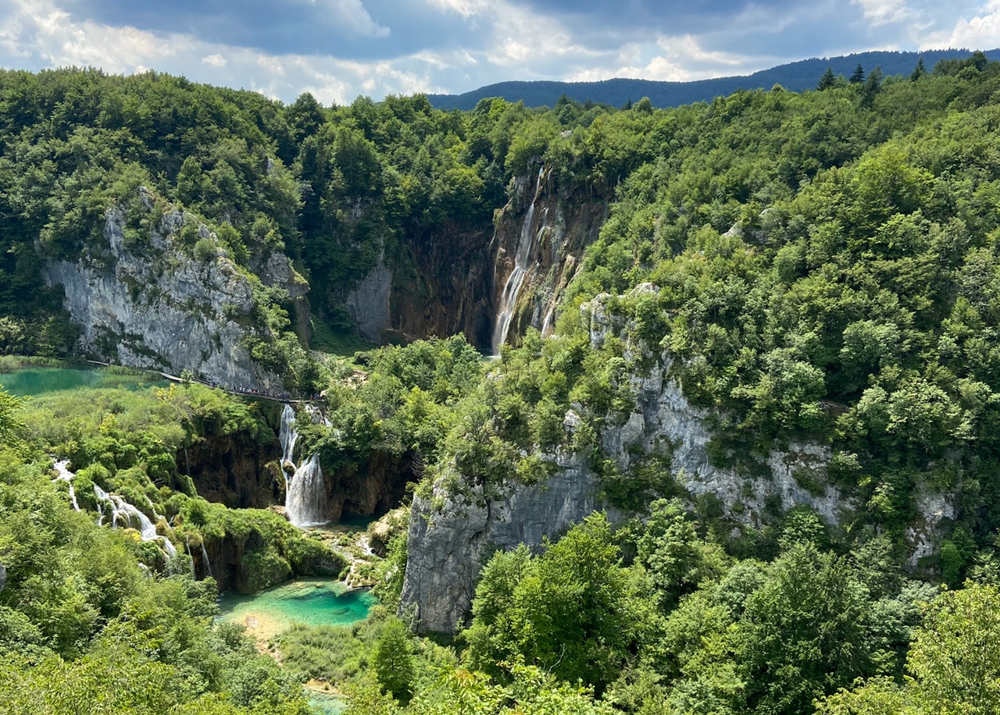

Whether you love Croatia for its stunning landscapes, rich history, delicious food, or warm people, it's a destination that leaves a lasting impression on those who visit. Croatia is a beautiful country with a lot to offer, and there are many reasons why people fall in love with it. Just follow me and you will understand.
On the slopes of Istria, among olive fields and truffle-rich forests, lies the heart of the Middle Ages - the town of Motovun. It has a reputation as the most charming town in Croatia. This mountaintop town arose from the ruins of the ancient Roman settlement of Kastalier, which flourished in the 10th century. Now the atmosphere is imbued with a unique Italian-Slavic charm, the aroma of truffles and freshly baked pies.
Trogir is a rocky island on the Adriatic coast, UNESCO World Heritage Site Trogir is steeped in the history of Ancient Greece, the Roman Empire, the Republic of Venice and modern Croatia. The city centre is criss-crossed by narrow streets where clotheslines hanging from wooden balconies flutter in the wind. The formidable and mighty walls of the Kamerlengo fortress and the Romanesque Cathedral are surrounded by cosy pizzerias and wine bars.
Split is a Croatian port and resort city that keeps many secrets. Annually it attracts thousands of tourists. Different epochs and cultures meet there: modern concrete and glass constructions are found side by side with the survived houses of the 15th – 19th centuries. The locals draw an analogy with clotheslines, which connect different houses as Split is a Croatian port and resort city that keeps many secrets. Annually it attracts thousands of tourists. A cozy Split is located in the center on the Adriatic coast. The food industry, including fish processing and wine production, is also well-developed here. Azure sea, the imperial castle, cozy cafes, and noisy markets create a unique mood for everyone who has been to this incredible city.